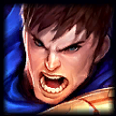
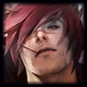

Yakın dövüş konusunda uzmanlaşan şampiyonlardan oluşan dövüşçüler, karşı takıma saldırı esnasında suikastçıların
yarattığı derecede hasar veremeseler de hem saldırı hem de savunma noktasında etkilidir. Çeviklik tarafında
suikastçılara yaklaşabilen ve aynı anda; hareket, engelleme, hasar ve dayanıklılık gibi özellikleri sunabilen
şampiyonların hasar potansiyelleri, zaman içerisinde artış gösterebilir. Bu da onları birer ölüm makinesine
dönüştürebilir. Yasuo, Garen, Sett gibi isimler, LoL oynarken seçebileceğiniz dövüşçülerden bazıları.
Popüler Karakterler
- Yasuo
Koridor: Orta Koridor
Özellikler: Yasuo, yüksek hareket kabiliyeti ve kritik vuruş şansı ile agresif bir oyun
tarzı
sunar. Rüzgâr duvarı yeteneğiyle gelen saldırıları engelleyebilir.
Görsel:

- Garen
Koridor: Üst Koridor
Özellikler: Basit mekanikleri ve yüksek dayanıklılığıyla uzun süre savaşabilir. Sessizlik ve
yüksek hasarlı ultisiyle rakiplerini hızla öldürebilir.
Görsel:

- Sett
Koridor: Üst Koridor
Özellikler: Hem tank hem de yüksek hasar veren bir dövüşçüdür. Rakipleri tutup yere çarparak
savaşları lehte çevirebilir.
Görsel:
